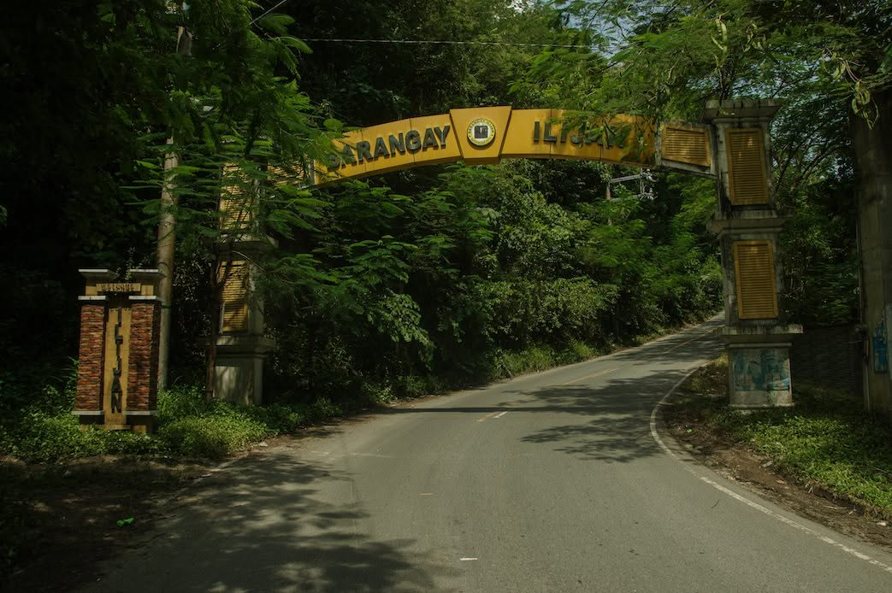

Barangay Ilihan is one of the 105 barangays in Batangas City, located in between Brgy. Pagkilatan and Brgy. Dela Paz. It is a home to 8 sitios namely, Hulong Bayanan, Bayanan, Silangan 1, Silangan 2, Goot, Lilinggiwan, Lilinggiwan 2, and Hulong Silangan. It has a land area of 1,080.8328 sq ft. Barangay Ilihan has a rich history dating back to its establishment. It has played a significant role in the development of Batangas City and continues to be an integral part of the community. Barangay Ilijan, located in Batangas City, has a rich history that dates back to its establishment in 1865. The barrio was originally named "Ilihan," derived from the word "Iluhan," meaning sugar mill, which was built by the Spaniards. The barrio has a diverse history, with various sitios and families contributing to its development. Notable families include the Claros, Jimenezes, Sanchezes, Manguerras, Evangelistas, Goots, Bajas, and Furtos. The barrio's historical sites and structures, such as the former sugar mill, still exist today, reflecting its past. Significant events in its history include the inauguration of the newly constructed church on December 17, 1951, and the measures and accomplishments towards rehabilitation and reconstruction following World War II.